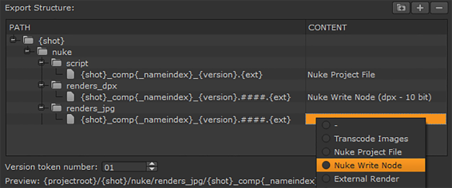

Presets are containers for export preferences, such as file structure and format, and filters for tracks, tags, and frame range. Two types of Presets are available to construct commonly used export tasks:
• Local Presets - these presets are used to set up round-trips between artists on different platforms and also to manage passing files between the Timeline and Compositing environment.
• Project Presets - you can drag-and-drop Local Presets into this panel to save the preset within a project .hrox file. This option is designed for collaborative work, allowing you to quickly share your export presets.
The shot template sets up the folder hierarchy and naming conventions for export presets such as Basic Nuke Shot with Annotations and Transcode Clip DPX, and how Create Comp sends clips back and forth between
Nuke Studio ships with default templates for your convenience, but you can quickly create custom templates using folders and “tokens”, which are replaced with the relevant information during export.
TIP: Clicking an entry in the shot template displays a preview file path with the tokens resolved under the Version token number field.
Exports can resolve the following tokens:
|
Token |
Resolves to |
|
_nameindex |
The index of the shot name in the sequence, preceded by _ (underscore), to avoid clashes with shots of the same name. |
|
{ampm} |
The local equivalent of either AM or PM. |
|
{binpath} |
The bin structure to preserve. Including this token recreates your bin structure up to the nearest parent bin. |
|
{clip} |
The name of the clip used in the shot processed. |
|
{day} |
The local weekday name, abbreviated to Mon, Tue, and so on. |
|
{DD} |
The day of the month as a decimal, 01, 02, and so on. |
|
{event} |
The timeline event number associated with the clip instance to process. |
|
{ext} |
The extension of the file to output, such as .dpx or .mov |
|
{filebase} |
The base of the clip name to process. For example, the filebase of Shot01_####.dpx is Shot01_####. |
|
{fileext} |
The format of the clip to process, such as .dpx or .mov |
|
{filehead} |
The source clip filename not including frame padding or extension. For example, the filehead of Shot01_####.dpx is Shot01. |
|
{filename} |
The source clip name of the media to process. |
|
{filepadding} |
The source filename padding, which you might use for formatting frame indices. |
|
{filepath} |
The full file path to the source media referenced in the export. |
|
{fullbinpath} |
The full bin structure to preserve. Including this token recreates the bin structure up to the project level. |
|
{fullday} |
The local full weekday name. |
|
{fullmonth} |
The local full month name. |
|
{hierotemp} |
The temp directory as specified in the Preferences. |
|
{hour12} |
The export start time hour component (12-hour clock). |
|
{hour24} |
The export start time hour component (24-hour clock). |
|
{MM} |
The month of the year as a decimal, 01, 02, and so on. |
|
{minute} |
The export start time minute component. |
|
{month} |
The local month name, abbreviated to Jan, Feb, and so on. |
|
{project} |
The name of the parent project of the export item. |
|
{projectroot} |
The root export file path as specified in the Timeline Environment Project Settings. |
|
{second} |
The export start time second component. |
|
{sequence} |
The sequence name to process. |
|
{shot} |
The name of the clip instance to process. |
|
{timestamp} |
The export start time in the 24-hour clock format (HHMM). |
|
{track} |
The name of the track to process. Exporting EDLs using this token generates a separate EDL for each track. |
|
{user} |
The current username. |
|
{version} |
The string v#, defined by the number (#) set in the Version section of the export dialog |
|
{YY} |
The year of the century as a decimal, 01, 02, and so on. |
|
{YYYY} |
The year, including century. |
TIP: Double-click the path column, right-click, and then choose Select Keyword to display a list of available export tokens, though only valid tokens for the current selection are listed.
Token substrings are valid if you need to extract a certain part of an evaluated string. For example, if {shot} resolves to JB100, then:
• {shot [0:2] } - resolves to JB
• {shot [-3:] } - resolves to 100
Similarly, anything within the outer brackets is evaluated as a Python string. For example, if {shot} resolves to JB_10_20, then:
• {shot.split(’_’) [0] } - resolves to JB
• {shot.split(’_’) [2] } - resolves to 20
The shot template enables you to create as many Nuke Read and Write nodes as required for a project. A typical use case might be creating .jpg clips for review and .dpx resolution clips for finishing.
The following example describes how to build a shot template to export a sequence of .mov clips, create .dpx and .jpg Write nodes in Nuke, and bring the .dpx clips back into the timeline.
| 1. | In the Export dialog, select Basic Nuke Shot in the Local Presets panel to auto-complete the shot template with the preset values. |
| 2. | Click Duplicate selected preset and give the new preset a name. |
| 3. | Rename the renders folder renders_dpx. |
| 4. | Select the nuke folder and click the folder icon to add a new folder. Name the new folder renders_jpg. |
| 5. | Select the renders_jpg folder and click to add a new entry. |
| 6. | Replace the {filename} token with {shot}_comp{_nameindex}_{version}.####.{ext}, the same as the existing entry under renders_dpx. |
NOTE: The #### marks represent frame numbers for image sequences. If you were creating .mov clips, they’d be omitted.
The shot template should look something like this:

| 7. | Click the Content column and select Nuke Write Node. |

NOTE: When using a third party application to produce the VFX work, select ExternalRender instead of Nuke Write Node.
| 8. | In the Content settings tab, use the File Type dropdown to select jpeg. |

Notice that the settings available change depending on the File Type selected.
| 9. | Click Nuke Project File in the shot template and check that both Write nodes are enabled. |

| 10. | Set up the rest of the export as described in Exporting Sequences and Clip Instances and click Export. |
|
|